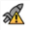
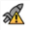

不活动 -红色火箭卡无效。

固件 错误 -卡固件有问题。将鼠标悬停在图标上以获取更多信息。

主动 -红色火箭卡存在并处于活动状态。
使用红色剪辑时，使用红色火箭卡可以显著提高渲染速度，尤其是在更高的分辨率下。
注意: 只有安装了红色火箭时，红色火箭图标才可见。
红色火箭图标有三种状态:
|
|
不活动 -红色火箭卡无效。 |
|
 |
固件 错误 -卡固件有问题。将鼠标悬停在图标上以获取更多信息。 |
|
|
主动 -红色火箭卡存在并处于活动状态。 |
要修改红色火箭选项:
| 1。 |
单击
|
注意: 你一定有 使用红色火箭 在中启用 偏好 > 性能 > 硬件 对话框访问这些选项。请参阅 附录 A: 偏好 欲了解更多信息。
的 红色火箭设置 对话框显示。

| 2. | 通过取消选择暂时禁用红色火箭卡 使用红色火箭卡 。与中的选项不同 偏好 对话框中，更改此设置不会影响启动时的应用程序。 |
| 3. | 单击 好 保存您的设置。 |
注意:
包含大量电影文件的项目 (例如
.R3d
和
。Mov
) 可能会超过每个进程可用文件句柄的数量，导致打开新文件或项目并导出时出现问题。
通过从终端输入以下命令，然后从同一会话运行应用程序，可以增加默认限制 1024:
Ulimit-Sn 2048
|
|